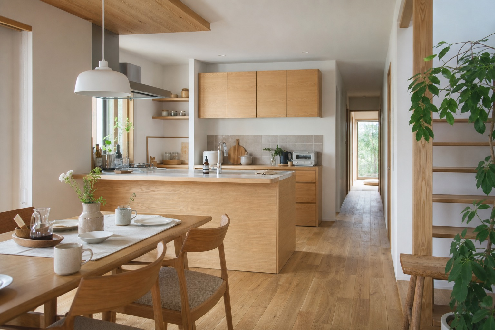
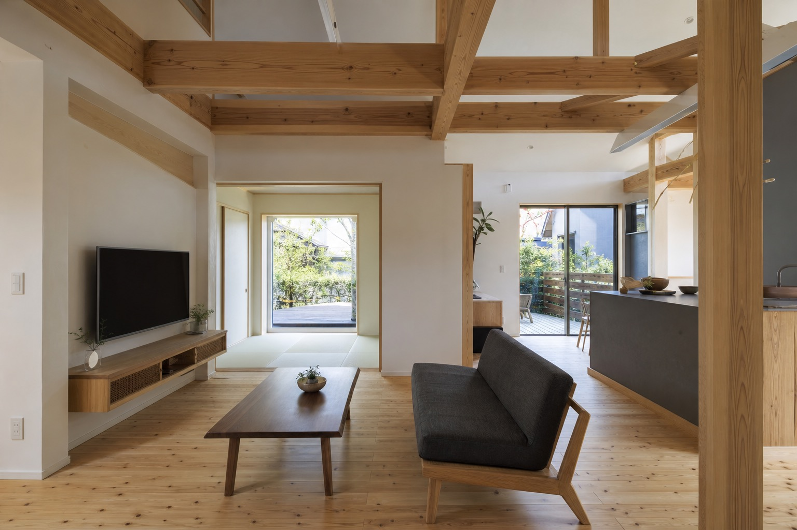
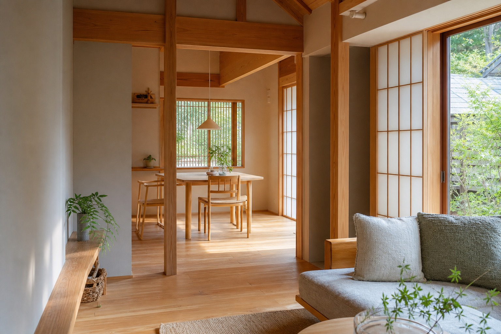
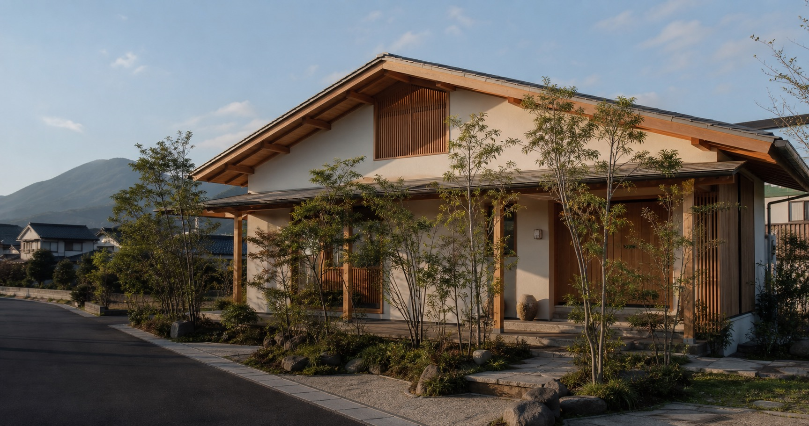
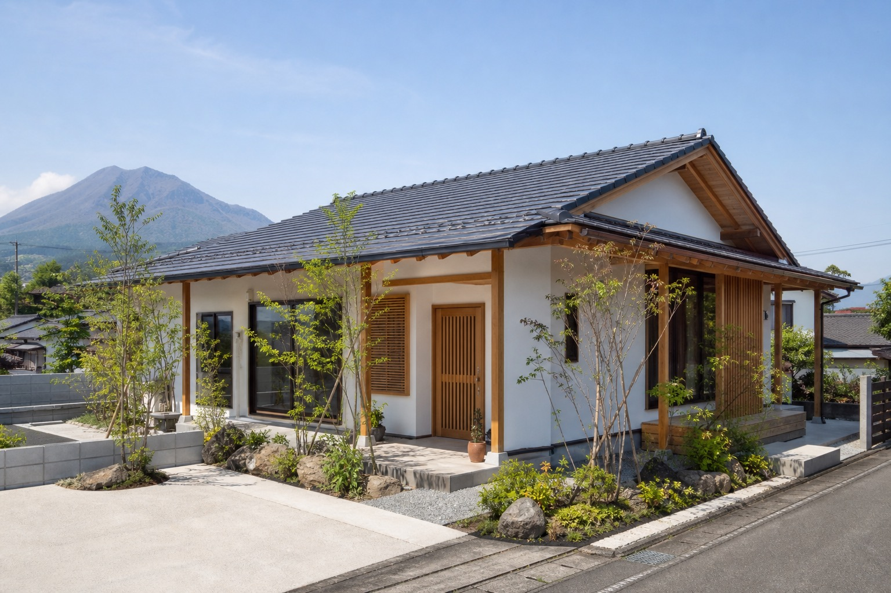

注文住宅・設計・施工
鹿児島の風土に適した新築一戸建て。天然木、高気密・高断熱、制震などのこだわりを軸に紹介。

仮画像鹿児島の風土に寄り添う注文住宅
天然木の質感、高気密・高断熱、制震。県民住宅のこだわりを、写真と余白で伝わる提案サイトへ。
天然木と、鹿児島の暮らし
公式サイトでは、県民住宅の家づくりを「材料・性能・安心」の3つのこだわりで紹介しています。天然木の調湿性、夏冬の快適性を支える高気密・高断熱、地震への備えとなる制震を、営業先が直感的に理解できる構成へ整理しました。
このデモでは、説明量を増やすのではなく、写真・短いコピー・相談導線で「見学して確かめたい」と思える見せ方にしています。

仮画像確認できたサービス
鹿児島の風土に適した新築一戸建て。天然木、高気密・高断熱、制震などのこだわりを軸に紹介。
会社概要の営業種目に記載あり。詳細メニュー、対応範囲、施工写真は公開前に要確認。
売り物件、土地、賃貸物件情報も既存サイトで確認。家づくり後の暮らしまで接点を広げる導線に。
選ばれる理由
施工事例の見せ方
既存サイトで確認できる施工例の傾向は、洋風の家、白を基調にした平屋、引き戸を多く使った住まいなど。ここでは実在案件名を作らず、差し替え前提の仮画像として配置しています。

仮画像
仮画像
仮画像会社概要
Contact
電話・見学予約・オンライン相談を同じ場所にまとめ、問い合わせ前の迷いを減らします。
099-268-5488 このフォームは営業提案用サンプルです。実際には送信されません。